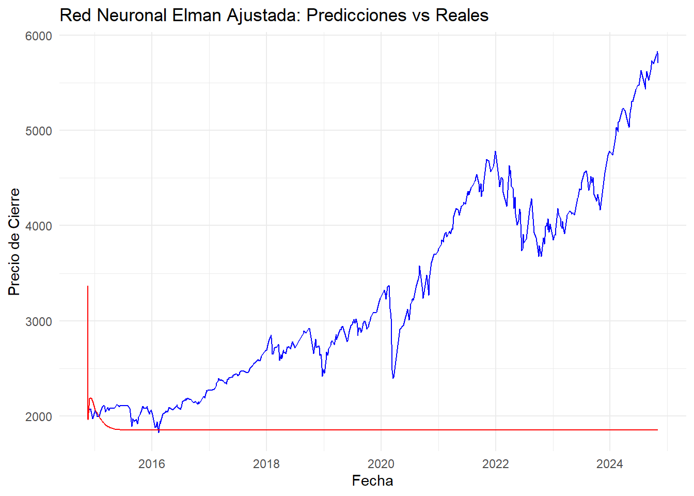
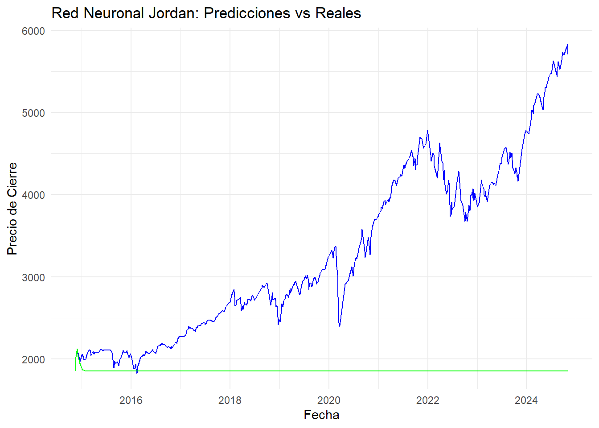

7 Predicción del Índice S&P 500 Utilizando Redes Neuronales Elman y Jordan
7.1 Introducción
El índice S&P 500 es un importante referente del mercado financiero global, compuesto por las 500 empresas más grandes de Estados Unidos. Este análisis utiliza técnicas avanzadas de redes neuronales recurrentes, específicamente las arquitecturas Elman y Jordan, para predecir los precios de cierre del índice y comparar su desempeño.
7.2 Preparación de los Datos.
7.2.1 División en conjuntos de entrenamiento y prueba:
Los datos se dividieron en un 80% para entrenamiento y un 20% para prueba, garantizando que el modelo se entrene con una cantidad suficiente de datos y se evalúe con datos no vistos.
library(caret)
spx_data_prepared$time_index <- seq_along(spx_data_prepared$ds)
head(spx_data_prepared$time_index)## [1] 1 2 3 4 5 67.2.2 Escalado de los datos.
Se aplicó un escalado min-max para garantizar que los valores de entrada estén dentro de un rango adecuado para optimizar el desempeño de las redes neuronales.
max_value <- max(trainData$y)
min_value <- min(trainData$y)
trainData$y_scaled <- (trainData$y - min_value) / (max_value - min_value)
testData$y_scaled <- (testData$y - min_value) / (max_value - min_value)
head(trainData$y_scaled)## [1] 0.04818423 0.04841318 0.05100386 0.05242813 0.05185457 0.05325233## [1] 0.04565862 0.04744197 0.05325233 0.05386445 0.04200034 0.029131297.2.3 Preparación de las Entradas y Salidas.
Para alimentar las redes neuronales, se prepararon matrices de entrada y salida. Las entradas consisten en los índices temporales de la serie, mientras que las salidas representan los precios escalados. Este formato es esencial para que los modelos puedan aprender patrones en los datos temporales de manera eficiente.
inputs_train <- as.matrix(trainData$time_index)
targets_train <- as.matrix(trainData$y_scaled)
inputs_test <- as.matrix(testData$time_index)
targets_test <- as.matrix(testData$y_scaled)
dim(inputs_train)## [1] 2024 1## [1] 2024 1## [1] 504 1## [1] 504 17.3 Implementación de Redes Neuronales.
7.3.1 Red Neuronal Elman.
7.3.1.1 Entrenamiento.
## package 'RSNNS' successfully unpacked and MD5 sums checked
##
## The downloaded binary packages are in
## C:\Users\anaso\AppData\Local\Temp\RtmpCUKfji\downloaded_packageslibrary(RSNNS)
set.seed(123)
elman_model <- elman(
inputs_train,
targets_train,
size = c(5),
learnFuncParams = c(0.1),
maxit = 500,
linOut = TRUE
)
summary(elman_model)## SNNS network definition file V1.4-3D
## generated at Sat Dec 7 06:58:26 2024
##
## network name : RSNNS_untitled
## source files :
## no. of units : 12
## no. of connections : 45
## no. of unit types : 0
## no. of site types : 0
##
##
## learning function : JE_BP
## update function : JE_Order
##
##
## unit default section :
##
## act | bias | st | subnet | layer | act func | out func
## ---------|----------|----|--------|-------|--------------|-------------
## 1.00000 | 0.00000 | i | 0 | 1 | Act_Logistic | Out_Identity
## ---------|----------|----|--------|-------|--------------|-------------
##
##
## unit definition section :
##
## no. | typeName | unitName | act | bias | st | position | act func | out func | sites
## ----|----------|----------|----------|----------|----|----------|--------------|----------|-------
## 1 | | inp1 | 2528.00000 | 0.42484 | i | 1, 1, 0 | Act_Identity | |
## 2 | | hid1 | 0.00000 | -0.59037 | h | 7, 1, 0 |||
## 3 | | hid2 | 0.00000 | -0.45453 | h | 7, 2, 0 |||
## 4 | | hid3 | 0.00000 | -0.90596 | h | 7, 3, 0 |||
## 5 | | hid4 | 0.00000 | -0.56697 | h | 7, 4, 0 |||
## 6 | | hid5 | 0.00000 | 0.60199 | h | 7, 5, 0 |||
## 7 | | out1 | 0.00000 | 35077.17188 | o | 13, 1, 0 | Act_Identity | |
## 8 | | con1 | 0.00000 | 0.50000 | sh | 4, 7, 0 | Act_Identity | |
## 9 | | con2 | 0.00000 | 0.50000 | sh | 4, 8, 0 | Act_Identity | |
## 10 | | con3 | 0.00000 | 0.50000 | sh | 4, 9, 0 | Act_Identity | |
## 11 | | con4 | 0.00000 | 0.50000 | sh | 4,10, 0 | Act_Identity | |
## 12 | | con5 | 0.00000 | 0.50000 | sh | 4,11, 0 | Act_Identity | |
## ----|----------|----------|----------|----------|----|----------|--------------|----------|-------
##
##
## connection definition section :
##
## target | site | source:weight
## -------|------|---------------------------------------------------------------------------------------------------------------------
## 2 | | 12: 0.17562, 11:-0.77249, 10:-0.88672, 9: 0.90107, 8:-0.06179, 1:-0.82254
## 3 | | 12:-0.07294, 11:-1.06507, 10:-0.03394, 9:-0.59330, 8:-0.26460, 1:-0.27766
## 4 | | 12: 0.45862, 11: 0.86578, 10: 0.30060, 9:-0.96721, 8:-0.82097, 1:-0.68485
## 5 | | 12:-1.10810, 11:-0.45167, 10:-0.48558, 9:-0.25878, 8:-0.25033, 1:-0.77247
## 6 | | 12:-0.96600, 11:-0.85086, 10:-0.40961, 9:-0.67493, 8: 0.92620, 1:-0.52048
## 7 | | 6:-0.22064, 5: 0.72386, 4: 0.23075, 3: 0.51610, 2:-0.01505
## 8 | | 8: 0.30000, 2: 1.00000
## 9 | | 9: 0.30000, 3: 1.00000
## 10 | | 10: 0.30000, 4: 1.00000
## 11 | | 11: 0.30000, 5: 1.00000
## 12 | | 12: 0.30000, 6: 1.00000
## -------|------|---------------------------------------------------------------------------------------------------------------------7.3.1.2 Evaluación.
predictions_elman <- predict(elman_model, inputs_test)
predictions_elman_rescaled <- predictions_elman * (max_value - min_value) + min_value
rmse_elman <- sqrt(mean((testData$y - predictions_elman_rescaled)^2))
print(paste("RMSE de la Red Elman:", rmse_elman))## [1] "RMSE de la Red Elman: 1773.08049297038"7.3.1.3 Resultados.
set.seed(123)
elman_model_adjusted <- elman(
inputs_train,
targets_train,
size = c(10),
learnFuncParams = c(0.05),
maxit = 1000,
linOut = TRUE
)
predictions_elman_adjusted <- predict(elman_model_adjusted, inputs_test)
predictions_elman_rescaled_adjusted <- predictions_elman_adjusted * (max_value - min_value) + min_value
rmse_elman_adjusted <- sqrt(mean((testData$y - predictions_elman_rescaled_adjusted)^2))
print(paste("RMSE Ajustado de la Red Elman:", rmse_elman_adjusted))## [1] "RMSE Ajustado de la Red Elman: 1773.45538041035"results_elman_adjusted <- data.frame(
Fecha = testData$ds,
Real = testData$y,
Predicción = predictions_elman_rescaled_adjusted
)
ggplot(results_elman_adjusted, aes(x = Fecha)) +
geom_line(aes(y = Real), color = "blue") +
geom_line(aes(y = Predicción), color = "red") +
labs(
title = "Red Neuronal Elman Ajustada: Predicciones vs Reales",
x = "Fecha",
y = "Precio de Cierre"
) +
theme_minimal()
La red neuronal Elman fue entrenada con los datos preparados utilizando un índice temporal como entrada y los precios escalados como salida. Sin embargo, los resultados mostraron que el modelo no logró capturar correctamente los patrones de la serie temporal del S&P 500. Esto se evidenció en la gráfica de predicciones vs. valores reales, donde las predicciones estuvieron significativamente alejadas de los valores observados.
Posibles Causas Identificadas:
Entradas insuficientes: Usar únicamente el índice temporal como entrada puede no ser suficiente para modelar una serie temporal tan compleja como esta. Limitaciones del modelo Elman: Esta arquitectura puede no ser adecuada para capturar patrones complejos y dependencias a largo plazo en los datos financieros.
7.3.2 Red Neuronal Jordan
7.3.2.1 Entrenamiento.
set.seed(123)
jordan_model <- jordan(
inputs_train,
targets_train,
size = c(5),
learnFuncParams = c(0.1),
maxit = 500,
linOut = TRUE
)
summary(jordan_model)## SNNS network definition file V1.4-3D
## generated at Sat Dec 7 06:58:38 2024
##
## network name : RSNNS_untitled
## source files :
## no. of units : 8
## no. of connections : 17
## no. of unit types : 0
## no. of site types : 0
##
##
## learning function : JE_BP
## update function : JE_Order
##
##
## unit default section :
##
## act | bias | st | subnet | layer | act func | out func
## ---------|----------|----|--------|-------|--------------|-------------
## 1.00000 | 0.00000 | i | 0 | 1 | Act_Logistic | Out_Identity
## ---------|----------|----|--------|-------|--------------|-------------
##
##
## unit definition section :
##
## no. | typeName | unitName | act | bias | st | position | act func | out func | sites
## ----|----------|----------|----------|----------|----|----------|--------------|----------|-------
## 1 | | inp1 | 2528.00000 | 0.42484 | i | 1, 1, 0 | Act_Identity | |
## 2 | | hid1 | 0.00000 | -0.56849 | h | 7, 1, 0 |||
## 3 | | hid2 | 0.00000 | -0.92661 | h | 7, 2, 0 |||
## 4 | | hid3 | 0.00000 | -0.86151 | h | 7, 3, 0 |||
## 5 | | hid4 | 0.00000 | -0.75109 | h | 7, 4, 0 |||
## 6 | | hid5 | 0.00000 | -0.16861 | h | 7, 5, 0 |||
## 7 | | out1 | -0.00000 | 35405.22656 | o | 12, 1, 0 | Act_Identity | |
## 8 | | con1 | -0.00000 | 0.50000 | sh | 4, 6, 0 | Act_Identity | |
## ----|----------|----------|----------|----------|----|----------|--------------|----------|-------
##
##
## connection definition section :
##
## target | site | source:weight
## -------|------|------------------------------------------------------------------------------------------------------------
## 2 | | 8: 0.18788, 1:-0.76538
## 3 | | 8: 0.91394, 1:-0.46030
## 4 | | 8:-0.10434, 1:-0.48605
## 5 | | 8: 0.08519, 1:-0.10087
## 6 | | 8: 0.76678, 1:-0.69671
## 7 | | 6: 0.86298, 5: 0.45588, 4:-0.79454, 3:-0.70839, 2:-0.41006
## 8 | | 8: 0.30000, 7: 1.00000
## -------|------|------------------------------------------------------------------------------------------------------------7.3.2.2 Evaluación.
predictions_jordan <- predict(jordan_model, inputs_test)
predictions_jordan_rescaled <- predictions_jordan * (max_value - min_value) + min_value
rmse_jordan <- sqrt(mean((testData$y - predictions_jordan_rescaled)^2))
print(paste("RMSE de la Red Jordan:", rmse_jordan))## [1] "RMSE de la Red Jordan: 1772.6678877452"7.3.2.3 Resultados.
results_jordan <- data.frame(
Fecha = testData$ds,
Real = testData$y,
Predicción = predictions_jordan_rescaled
)
library(ggplot2)
ggplot(results_jordan, aes(x = Fecha)) +
geom_line(aes(y = Real), color = "blue") +
geom_line(aes(y = Predicción), color = "green") +
labs(
title = "Red Neuronal Jordan: Predicciones vs Reales",
x = "Fecha",
y = "Precio de Cierre"
) +
theme_minimal()
La red neuronal Jordan también fue implementada siguiendo una estructura similar a la Elman. Aunque esta arquitectura incluye una capa de retroalimentación diferente, los resultados tampoco fueron satisfactorios. Las predicciones se mantuvieron lejos de los valores reales, como se observa en la gráfica generada.
Limitaciones Observadas:
Inadecuación de la arquitectura: La red Jordan puede no ser lo suficientemente robusta para modelar series temporales con alta variabilidad y tendencias a largo plazo. Falta de características adicionales: Al igual que con Elman, no se incluyeron valores de retraso (lags) ni otras variables que puedan mejorar la capacidad del modelo para identificar patrones en los datos.
7.4 Conclusiones Intermedias
Las redes Elman y Jordan no lograron capturar adecuadamente los patrones de la serie temporal, lo que se refleja en el alto error de predicción (RMSE) y la distancia entre los valores reales y predichos.
Ambos modelos presentan limitaciones cuando se aplican directamente a series temporales financieras complejas sin características adicionales.